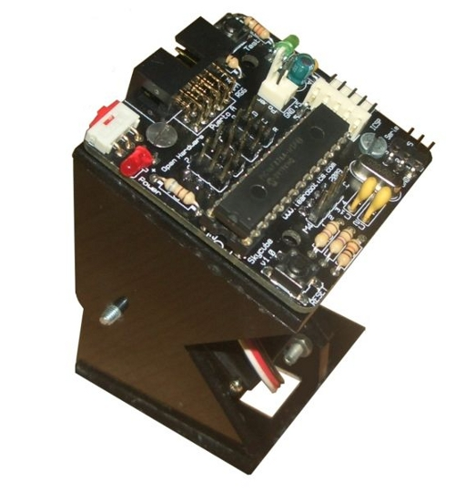
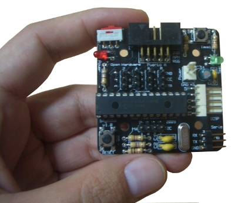
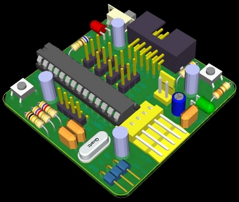

Acaba de nacer la
tarjeta Skycube 1.0
para el control de
robots modulares autónomos.
Se puede adaptar tanto a los
módulos Y1 como a los nuevos
módulos MY.
El PCB es de color negro, lo que de da un toque friki 😉 y las esquinas
están redondeadas. Hemos fabricado 50 unidades en
ELATE SA.

Es
hardware libre2, por lo que cualquier la puede
estudiar, modificar, distribuir o fabricar. Las características son:
Microprocesador: PIC16F876A a 20Mhz
Conexión de hasta 8 servos (8 módulos).
4 conectores de servos por cada cara, para facilitar el cableado
Comunicación por bus I2C entre tarjetas Skycube.
Conector de I2C doble, uno por cada cara, para facilitar la interconexión
Conector de alimentación doble, tipo molex, uno por cada cara
Conector de grabación ICSP
Led de pruebas
Botón de pruebas
Micro-interruptor de on/off
Led de power-on
Slot de expansión para conectar sensores
Pines de TX y RX accesibles mediante un conector. Muy útil para descargar firmware usando un bootloader

Ha sido diseñada con la herramienta
Kicad.
Podéis encontrar más fotos en este Álbum.
Obijuan
Hi,
I am planning to use this skycube card in my project. So, there are something that i like to ask:
1. Is the program can be directly downloaded into the card just by using a USB cable?
2. Which software are used to download the program into the card(pydownloader or bootloader)?
3. I have difficulty to open the pydownloader, please advice.
Thanks
Hi Clarence,
1) Yes. You should by an FTDI RS-232 cable.
2) First you should burn the Bootloader. Then you use Pydownloader to download any .hex file
3) Send me an email with more details. It should work ok on any platform (linux, windows). Maybe you should not have installed some tools needed. You should install all the packages mentioned here:
Pydownloader-wx for windows